The symposium, held on September 8-11, 2014, was jointly organized by the History Departments at Stanford University and Sun Yat-sen University with the goal of facilitating transnational cooperation in research on historic Chinese migration. The Guangdong Overseas Chinese History Compilation Committee and the Chinese Railroad Workers in North America Project co-sponsored the symposium. The four-day program included two days of symposium paper presentations, and two days of local travel to visit other programs and sites in the Wu Yi (five counties) region of Guangdong Province. Attendees included scholars in history, literature, film studies, photography, oral history, cultural studies and historical archaeology.
Symposium
The conference opened with welcome remarks by Chen Chunsheng, the Managing Deputy Secretary and the Vice President of Sun Yat-sen University; Lin Lin, Overseas Chinese Affairs Office of Guangdong Province; Gordon H. Chang, Olive H. Palmer Professor in Humanities at Stanford, Director of the Center for East Asian Studies, Co-Director of the Chinese Railroad Workers in North America Project, Stanford University; and Wu Yixiong, Director of Sun Yat-sen University’s History Department.
Thirty-two papers were presented at the symposium in English and Chinese, with translation summaries provided by bilingual students. The opening keynote address, “Seeing Absence, Listening to Silence: The Challenge of Reconstructing Chinese Railroad Workers’ Lives” was given by Shelley Fisher Fishkin, the Joseph S. Atha Professor of Humanities, Professor of English, and Co-Director of the Chinese Railroad Workers in North America Project. Stanford. Professor Barbara Voss, Director of the Archaeology Network, joined other archaeologists to introduce historical archaeology to symposium attendees as a source of information about Chinese immigrants in North America. Hilton Obenzinger, Associate Director of the Project, also demonstrated the possibilities of the digital archive we are constructing, including ways to visualize data through digital design. Evelyn Hu- Dehart, Professor of History and Ethnic Studies, Director of the Center for Study of Race and Ethnicity in America, Brown University, and a leader of the project, gave a presentation comparing the experiences of the Chinese who went to Cuba and the railroad workers.. In his closing remarks, Professor Yuan Ding, Professor and Director of South-East Asia Study Institute at Sun Yat-sen University and Associate Editor-in Chief of the Guangdong Overseas Chinese History Project, exhorted his Chinese colleagues to increase their research, and to conduct fieldwork and archaeology in Guangdong.
Tour of Wu Yi (Five Counties) Region
Following the symposium meetings, our Chinese hosts arranged a two-day tour of the Wu Yi (five counties) region of Guangdong Province to show visitors from the U.S. and Taiwan the resources that have been developed for the study of Overseas Chinese and their ancestral villages (qiaoxiang).
We visited the Guangdong Qiaoxiang (Overseas Chinese Hometowns) Cultural Research Centre at Wu Yi University in Jiangmen, Guangdong. Wu Yi University was founded in 1985 through support of Overseas Chinese donors. The Cultural Resource Centre is an active research program with several affiliated faculty and graduate students. The Centre includes an archive composed primarily of records donated by families in the area, and produces a publication series. Professor Zhang Guoxiong gave a presentation of documents relating to Chinese going to the United States to work. The growth of such an archive is exciting.
We were taken to the Jiangmen Wuyi Museum of the Overseas Chinese. We were impressed by the high-concept, four-story museum constructed in 2002. Beginning with exhibits about home villages and labor recruitment, the museum traces the journey of Overseas Chinese people through ocean voyages, labor recruitment, the establishment of Chinatowns overseas, the struggle against anti-Chinese discrimination and exclusion, and the long-term contributions of Overseas Chinese both in China and abroad. One of the most interesting aspects of the museum is the international perspective used, in which Chinese immigration to the United States is a significant but not dominant aspect of the overall story. Chinese immigration to other Asian countries, Australia, Latin America, and Canada are prominently featured in exhibits and interpretation.
We also visited a charity cemetery. Many Overseas Chinese communities shipped the remains of the deceased back to Guangdong to be buried by relatives. But some human remains were unclaimed, and the cemetery provides a final resting place. Visiting this cemetery was especially moving, as symposium participants were given opportunities to honor the deceased through incense offerings and flowers.
We were welcomed at the Kaiping Diaolou Conservation and Development Project led by Wu Yi University architectural historian Selia (Jinhua) Tan and part of the Research Center for Overseas Chinese Hometown Culture in Guangdong Province. Professor Tan led a tour of ancestral villages in the Kaiping region. Several locations are recognized as UNESCO World Heritage Sites as well as National Cultural Heritage Sites because of the presence of distinctive architecture, including diaolous (watchtowers that were built in the 19th and 20th centuries to provide protection against bandits.) During the drive to the villages, Dr. Tan pointed out prominent homes once owned by labor recruiters, and explained the geography of clan residences. Our tour stopped at two villages, including Cang Dong Village, to see ancestral halls, schools, and other structures built by returning Overseas Chinese. At Cang Dong Village, Dr. Tan founded and directs the Cang Dong Education Centre to conserve and interpret the architecture, landscapes, and culture of this distinctive region.
Overall the conference was very valuable in helping us better understand the work currently being done by researchers in Chinese universities and heritage sites on the history and culture of transnational Chinese migration. Without question, the symposium opened up new potential avenues for collaboration and exchange among scholars in North American and Asia.
Adapted by Hilton Obenzinger from Barb Voss’s report to the Archaeology Network
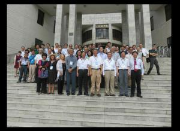
Conference participants International Symposium on the North America Chinese Laborers and Guangdong Qiaoxiang Society, Sun Yat-sen University, Guangzhou, China
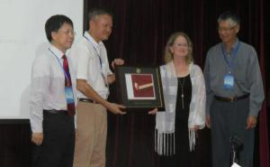
Professor Yuan Ding (Sun Yat-sen University), Associate Editor-in Chief of the Guangdong Overseas Chinese History Project and Professor Chen Chuensheng (Sun Yat-sen University), Vice President, being presented with photo of the Golden Spike at the Cantor Center for the Visual Arts at Stanford by Chinese Railroad Worker Project Co-Directors and Stanford University professors Gordon H. Chang and Shelley Fisher Fishkin.
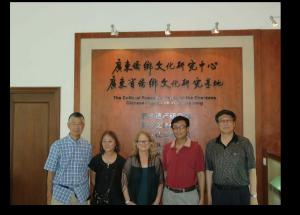
Chinese Railroad Worker Project Organizers Gordon H. Chang, Evelyn Hu-DeHart, Shelley Fisher Fishkin, and Dongfang Shao with Zhang Guoxiong (in red), Vice Chancellor of Wu Yi University and Vice President of the Guangdong Overseas Research Association at the Overseas Chinese Cultural Research Center in the Overseas Chinese Hometown in Guangdong at Wuyi University.
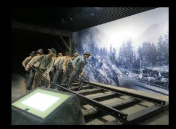
Diorama of the Chinese workers on the Central Pacific Railroad at the Jiangmen Wuyi Museum of the Overseas Chinese.
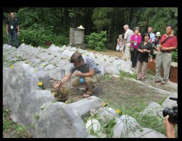
The group pays their respect to the dead Overseas Chinese in a charity cemetery.
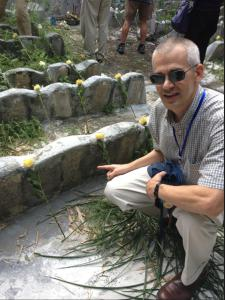
Professor Matt Sommer, a Chinese historian from Stanford, identifies the headstone of a woman whose remains were sent back to Guangdong from the United States in the charity cemetery.
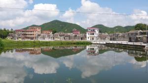
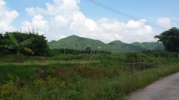
Long Gang Li, the home village of Central Pacific railroad worker Bein Yiu Chung, a part of the Kaiping Diaolou Conservation and Development Project led by Wu Yi University architectural historian Selia Jinhua Tan. Professor Selia Jinhua Tan conducted a tour of Long Gang Li.
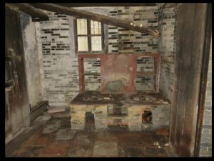
Hearth in Long Gang Li in the ancestral home of a railroad worker.
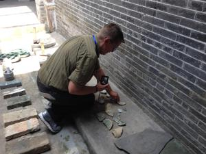
Professor Barbara Voss (Stanford) photographing ceramic potsherds in Long Gang Li.
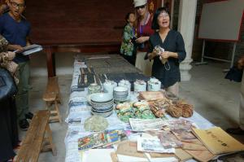
Professor Selia Jinhua Tan (Wuyi University) describes the objects of daily life in Cang Dong Village at the the Cang Dong Education Centre she directs that is devoted to conserving and interpreting the architecture, landscapes, and culture of this distinctive region.
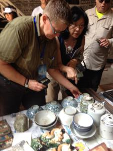
Project participants Barbara Voss, Connie Young Yu and Hilton Obenzinger discuss the pottery on display at the Cang Dong Education Centre in Cang Dong Village, Guangdong Province.
Pottery made in China on display at the Cang Dong Education Centre.
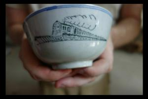
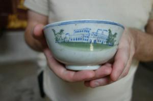
A mysterious china bowl the group saw at the Cang Dong Education Centre with a train painted on it that was probably made in China. Project member Li Ju, a photographer based in Beijing who has travelled along the railroad route, suggested that the building resembles the Ogden, Utah railroad station. Project member Chris Merritt, an archaeologist and Senior Preservation Planner at the Utah Division of State History, notes that the train appears to be an engine that was designed specifically for the Union Pacific Railroad from the 1940s until 1959.
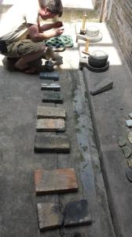
Archaeologist Ryan Kennedy (Indiana University) photographs artifacts in Cang Dong Village.
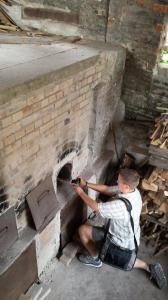